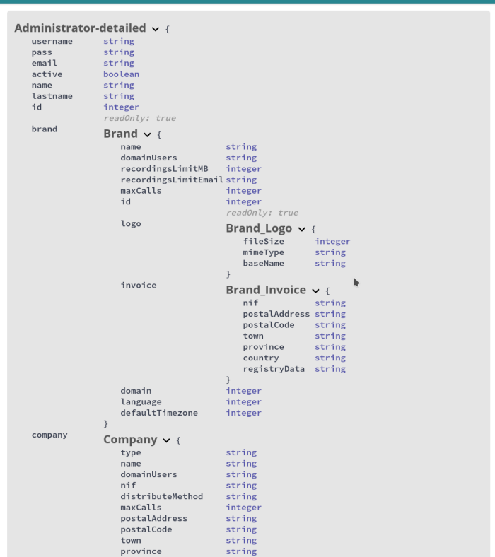

Built-in web client¶
APIs come with their own web client so that you can test them easily. Go to Platform API for instance.

You will need to get an access token with some valid admin credentials before anything else. You can do that from [Auth] > [POST /admin_login] section. Click on Try it out button, set your credentials and click on execute to send the request. You should get a response that contains a token and a refresh token.

Copy the token and set it on Authorize button at the top of the page. The token ttl (time to live) is one hour by default, you can use the refresh token then to get a new one without sending admin credentials again.
Once you have got your token properly set, click on [GET /administrators] endpoint, Try it out and Execute. You may want to switch Response content type as well (JSON or LD+JSON for this endpoint).

It’s possible to filter and sort response using Parameters input fields as well.
Specification
You can check out request and response models from the web client itself.
